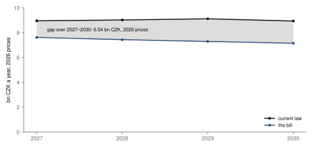
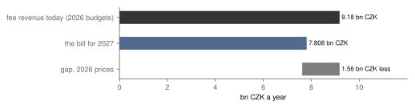
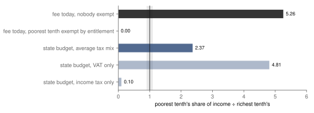
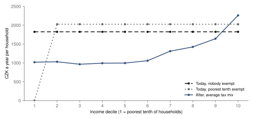
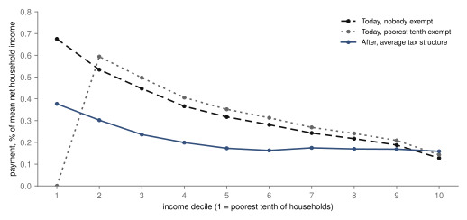

Research · Pre-specified · Czech licence fees and the state budget, 2026–2030
What changes for Czech TV and radio without the licence fee?
As introduced, the bill gives the broadcasters 6.54 bn CZK less than current law over 2027–2030 (2026 prices); taxes would take less from the poorest tenth than an exemption-free fee, more than one exempting it.
- Money, 2027–2030
- −6.54 bn CZK the bill against current law for ČT and ČRo, 2026 prices, payers held fixed · 4.65 to 6.54 bn CZK less across all 12 combinations tried · lower under the bill in each
- Fee today: poorest vs richest
- 0.00 to 5.26 the poorest tenth's share of income paid, as a multiple of the richest tenth's · if all of the poorest tenth were exempt, or if nobody were; exemptions counted by entitlement · depends on the assumption
- Budget funding: poorest vs richest
- 2.37 the same multiple, funded from the average mix of state taxes · VAT alone 4.81, income tax alone 0.10 · higher for the poorest tenth
- After vs today, nobody exempt
- 0.45 the multiple after, divided by today's if nobody were exempt · against a fee that exempts all of the poorest tenth it cannot be computed, as they pay nothing today · depends on the assumption
In short
- The money. Over 2027–2030 the bill gives ČT and ČRo 6.54 bn CZK less than current law, in 2026 prices with payers held fixed (fig. 1).
- The first year. In 2027 the bill gives 1.56 bn CZK less than today's fee revenue, in 2026 prices (fig. 2).
- Who carries the most. Funded from the average tax mix, the poorest tenth would carry 2.37 times the richest tenth's share of income; whether that is more or less than today depends on how many poor households are exempt (fig. 3).
- In crowns. Funded from taxes, the payment would rise with income, from 1 018 CZK to 2 261 CZK a year per household (fig. 4).
Arithmetic on published averages, for the bill as introduced. Nothing here is about the independence, quality or reach of the broadcasters.
Czech public television (ČT) and public radio (ČRo) are paid mainly from licence fees. A household with a TV pays 150 CZK a month and one with a radio 55 CZK, unless it is exempt. Firms pay by their number of employees2.
A government bill, Sněmovní tisk 231, would scrap the fees. The state budget would pay both broadcasters a fixed contribution instead, 7 807 592 000 CZK in 20271.
This article asks two questions. Would the broadcasters get more or less than under current law? And who would carry the cost, compared with now? The answers come from published figures, under rules set before any result was seen.
The bill's stage was checked on 3 November 2026. After its first reading, a committee paused its debate; it can resume from 24 December 20261. Press reports expect the bill to start during 2027 or from January 202812. Everything here describes the bill as introduced.
The money for ČT and ČRo
Current law gives the broadcasters more than the bill in every year from 2027 to 2030: 6.54 bn CZK more over the four years, in 2026 prices, with the number of payers held fixed.

Under current law the fees rise by 6 % once inflation has added up to more than 6 % since the last rise. The bill fixes its 2027 amount. It rises only once inflation since 2026 adds up to more than 10 %.
At the forecast, the fees would rise once, on 1 July 2028. The bill's amount would not rise at all by 2030.
The forecast does not decide the result. The study also tried higher and lower inflation, two readings of the bill's clause and two starting points. The bill gives less in all 12 combinations. By the rules set before the results, that counts as less money under the bill.
In the first year, too, the bill gives less: in 2026 prices, its 2027 amount is 1.56 bn CZK below today's fee revenue.

Today the broadcasters' budgets expect 9.18 bn CZK a year from the fees. The bill gives 7.808 bn CZK for 2027. Its explanatory report says this equals their fee income of 2024, before the last fee rise1.
Who would pay
Funded from the average mix of state taxes, the poorest tenth of households would pay 2.37 times as large a share of its income as the richest tenth; whether that is more or less than today depends on how many poor households are exempt.

A flat fee takes a bigger share of a small income than of a large one. Taxes are spread by what households spend and earn instead.
If nobody were exempt from the fee, the poorest tenth of households would pay 5.26 times as large a share of its income as the richest tenth.
Counting exemptions by entitlement, not by actual take-up, today's figure lies between 0.00 and 5.26 times the share; the low end is crude, because it treats all of the poorest tenth as exempt, so it pays nothing. How many poor households claim the exemption is not known.
So, by the rules set before the results, today's position counts as depending on the assumption.
From the state budget, the answer depends on which taxes pay. With the average mix of taxes it is 2.37. With VAT alone it would be 4.81, with income tax alone 0.10.
By the same rules, the average mix counts as the poorest tenth carrying a higher share of its income than the richest.
Would the switch lighten or add to the load on the poorest tenth? Against a fee nobody is exempt from, budget funding takes a smaller share from them. Against a fee that exempts all of them, they pay nothing today and something after. The data cannot say which is closer to the truth.
In crowns, the fee costs every paying household the same; funded from taxes, the payment rises with income, to 2 261 CZK a year in the richest tenth.

If nobody were exempt, the fee would average 1 824 CZK a year per household. From the average mix of taxes, a household in the poorest tenth would pay 1 018 CZK.
If nobody were exempt, the fee would take the largest share of income from the poorest tenth; funded from taxes, the share still falls with income, but less steeply.

As a share of income, the payment from taxes falls as income rises, at almost every step (fig. 5). Firms and older households are described under Details and reproduction.
What this does not show
- It works from published averages for groups of households, not from records of real households.
- Exemptions are counted by who is entitled, not by who claims them.
- VAT and excise are assumed to fall wholly on households and company tax wholly on firms; social insurance is left out. The government could also pay from other taxes, from debt or by cutting other spending.
- Inflation is the ČNB summer 2026 forecast. If the autumn report is out by 30 November 2026, the study is run again and this page updated.
- It covers the bill as introduced over 2027–2030, not a later start or amendments, and says nothing about the broadcasters' independence, quality or reach.
How this was done
The questions, the rules and the way each result is labelled were fixed in a design and registered with signed tags before any result was computed. The money compares each broadcaster's 2026 budget, moved by the law's fee rule, with the bill's amounts, in 2026 prices9.
For households, the study uses ČSÚ's 2025 income and spending surveys, split into ten equal groups by income. The bill's total is spread over the main state taxes by their 2025 revenue.
The author has said publicly that she favours keeping the licence fee and raising it; the study was registered before any outcome table was opened so that this view could not shape the result, and the design states which way each simplification pushes the result relative to it.
Details and reproduction
How the results are labelled
Each result gets a label by a rule fixed in the design (§6) before the results. The money result is labelled "bill lower"; today's comparison of the poorest and richest tenth is labelled "depends on the assumption"; funding from the state budget is labelled "higher"; and the change from today is labelled "depends on the assumption".
| Question | Primary result | Range in the label | Label (registered rule) |
|---|---|---|---|
| Q-A · current law minus the bill, 2027–2030, 2026 prices, payers held fixed | 6.54 bn CZK | 4.65 to 6.54 bn CZK | bill lower |
| Q-B today · Y, poorest ÷ richest tenth, exemptions counted by entitlement | – | 0.00 (poorest tenth exempt) to 5.26 (nobody exempt) | depends on the assumption |
| Q-B after · Z, average tax structure | 2.37 | VAT alone 4.81, income tax alone 0.10, not in the label | higher |
| Q-B change · Z against both bounds of Y, exemptions counted by entitlement | Z ÷ Y (nobody exempt) = 0.45 | with the poorest tenth exempt undefined, Y = 0 | depends on the assumption |
X is current law minus the bill, summed over 2027–2030 in 2026 prices with payers held fixed; "bill lower" if X ≥ 0.1 bn CZK in all 12 combinations. Y (today) and Z (after) divide the poorest tenth's payment as a share of its income by the richest tenth's. A ratio above 1.1 means the poorest tenth carries a higher share of its income than the richest, below 0.9 a lower share, a "similar" band in between; a ratio divided by 0 (Y = 0) counts as above the band. There are no intervals: the inputs are published aggregates, and the uncertainty is the registered range, which is not a probability.
Registered readings
The design wrote these three readings before the results; the study code filled in the numbers. They are quoted as they stand.
If the bill passes as introduced, ČT and ČRo would receive 6.54 bn CZK less (2026 prices) over 2027–2030 than under current law.
Today the poorest tenth of households carries between 0.00 and 5.26 times the share of its income that the richest tenth does (the range is the two exemption bounds; exemptions are counted by entitlement, not by actual take-up). Funded from the state budget at the average tax structure it would be 2.37 times; if the money came from VAT alone it would be 4.81 times, and from personal income tax alone 0.10 times. If the amount is borrowed, current households carry nothing now. Firms and public bodies pay 0.81 bn CZK a year today (what remains of the budgeted fee revenue after households, public bodies included); the schedule of §5 applied to the registered employers gives 1.39 bn CZK (the remainder is 0.58 times that), and the two may differ because not every registered firm is registered for the fee, the remainder includes public bodies (§3(4)) and rental-vehicle fees, and the register counts registered units, not full-time equivalents. After, firms and public bodies would carry 1.98 bn CZK (the corporate-income-tax share of the total); the two figures are not like for like.
Today ČT and ČRo get 9.18 bn CZK a year in fee revenue (2026 budgets). The bill gives 7.808 bn CZK for 2027, which is 1.56 bn CZK (2026 prices) less. Firms and public bodies pay 0.81 bn CZK a year today (what remains of the budgeted fee revenue after households, public bodies included); the schedule of §5 applied to the registered employers gives 1.39 bn CZK (the remainder is 0.58 times that), and the two may differ because not every registered firm is registered for the fee, the remainder includes public bodies (§3(4)) and rental-vehicle fees, and the register counts registered units, not full-time equivalents. After, firms and public bodies would carry 1.98 bn CZK (the corporate-income-tax share of the total); the two figures are not like for like.
Read with their conditions: the money figures hold with the number of payers held fixed; the lower end of the range for today, 0.00, is crude, because it treats every household of the poorest tenth as exempt; and the firm figures for today and after are not like for like.
Method summary
For the money (Q-A), current law starts from each broadcaster's 2026 budgeted fee revenue34 and moves only by the law's own inflation rule. The number of payers is held fixed, which favours current law, because a fall in payers would lower that path. The bill carries its 2027 amounts forward under its own clause. Amounts are in 2026 prices, at the ČNB summer 2026 forecast89.
For who pays (Q-B), the unit is the household, in the ten income deciles of ČSÚ's 2025 income survey (SILC), whose income refers to 20245. The burden of a decile is its average payment divided by its mean net household income. Z splits the bill's total across the four main state taxes by their 2025 revenue76.
The bill's committee stage: on 30 October 2026 the Committee on Media and Culture interrupted its deliberation, and further deliberation is possible from 24 December 20261. Press reports of 1 November 2026 expect it to take effect during 2027 or from January 2028, not on 1 January 2027 as introduced12.
The money in full: rules, the 12 combinations and the paths by year
Three paths for 2027–2030 are compared for ČT and ČRo together. Under current law the monthly fees rise by 6 % on 1 July of the year after the one in which the sum of annual inflation since the last increase exceeds 6 %. The second path is the bill with its clause: the 2027 amounts are carried forward, and rise by 10 % from the year after cumulative inflation since 2026 exceeds 10 percentage points. The third path is the bill with no rise at all.
The clause's "cumulative" inflation has two readings, the sum of the annual rates and the compounded rate, and both are in the range. Inflation is the ČNB summer 2026 forecast (2.5 % in 2025, 1.99 % in 2026 and 2.48 % in 2027), with 2.0 % for the years it does not cover. The headline X is current law minus the bill with its clause, summed over 2027–2030 in 2026 prices. The 12 combinations are: inflation one percentage point lower, as forecast and one percentage point higher; the two readings; and two starting points, the 2026 budgets and the 2025 outturn of fee revenue indexed by the legal fee path. With the 2025 outturn as the starting point and the forecast inflation, the bill gives 5.92 bn CZK less in 2026 prices, payers held fixed.
At the forecast the bill's clause does not trigger by 2030, so the bill with and without its clause give the same money. Across the range the clause triggers only when inflation is one percentage point higher than forecast: from 2030 under the sum reading and from 2029 under the compounded reading. In those four combinations current law steps twice, on 1 July 2028 and 1 July 2030, and the bill still gives less. With inflation one percentage point lower, current law steps once, on 1 July 2029, and the bill's clause does not trigger.
| Inflation · clause reading · starting point | X, 2026 prices | Current-law fee rises | Bill's contribution rises |
|---|---|---|---|
| −1 pp · sum · 2026 budgets | 6.15 bn CZK | 1 July 2029 | none by 2030 |
| −1 pp · sum · 2025 outturn, indexed | 5.52 bn CZK | 1 July 2029 | none by 2030 |
| −1 pp · compounded · 2026 budgets | 6.15 bn CZK | 1 July 2029 | none by 2030 |
| −1 pp · compounded · 2025 outturn, indexed | 5.52 bn CZK | 1 July 2029 | none by 2030 |
| forecast · sum · 2026 budgets primary | 6.54 bn CZK | 1 July 2028 | none by 2030 |
| forecast · sum · 2025 outturn, indexed | 5.92 bn CZK | 1 July 2028 | none by 2030 |
| forecast · compounded · 2026 budgets | 6.54 bn CZK | 1 July 2028 | none by 2030 |
| forecast · compounded · 2025 outturn, indexed | 5.92 bn CZK | 1 July 2028 | none by 2030 |
| +1 pp · sum · 2026 budgets | 5.97 bn CZK | 1 July 2028, 1 July 2030 | from 2030 |
| +1 pp · sum · 2025 outturn, indexed | 5.36 bn CZK | 1 July 2028, 1 July 2030 | from 2030 |
| +1 pp · compounded · 2026 budgets | 5.26 bn CZK | 1 July 2028, 1 July 2030 | from 2029 |
| +1 pp · compounded · 2025 outturn, indexed | 4.65 bn CZK | 1 July 2028, 1 July 2030 | from 2029 |
| Year (primary) | Current law, nominal | Bill, nominal | Price level, 2026 = 1 | Inflation |
|---|---|---|---|---|
| 2027 | 9.181 bn CZK | 7.808 bn CZK | 1.0248 | 2.48 % |
| 2028 | 9.472 bn CZK | 7.808 bn CZK | 1.0496 | 2.41 % |
| 2029 | 9.763 bn CZK | 7.808 bn CZK | 1.0706 | 2.00 % |
| 2030 | 9.763 bn CZK | 7.808 bn CZK | 1.0920 | 2.00 % |
| 2027–2030, 2026 prices | 36.04 bn CZK | 29.50 bn CZK | – | – |
ČT and ČRo together. Starting point of the 2026 budgets: 6.73 bn CZK (ČT) and 2.451 bn CZK (ČRo). Starting point of the 2025 outturn: realised fee revenue of 6.34 bn CZK (ČT) and 2.316 bn CZK (ČRo), indexed by the legal fee path. Payers held fixed. ČNB summer 2026 forecast; 2.0 % from 2029.
Who pays in full: payer shares, exemptions, taxes, firms, seniors and the table by decile
Today's payment is the fee times the share of households registered as payers. Those shares are 76.1 % for TV and 68.8 % for radio, from 3 493 847 and 3 157 882 household payers in the 2025 annual reports against 4 591 655 households. The law exempts households whose net income is below 2.15 times their living minimum, but only after they declare it, so how many are exempt in fact is unknown. Two bounds are used, both counting exemptions by entitlement. In the no-exemption case nobody is exempt. In the exempt-decile case a whole decile is exempt if its mean income is below the threshold, and decile 1 if no decile is; in this run only decile 1 was exempt, and its payers are spread over the other nine deciles.
After, the bill's total is split across taxes in proportion to the state budget's own 2025 tax revenue: VAT 3.15 bn CZK, excise duties 1.23 bn CZK, personal income tax 1.44 bn CZK and corporate income tax 1.98 bn CZK. VAT and excise are given to households by their spending on each category, from ČSÚ's 2025 spending survey by quintile; personal income tax by the income tax each decile pays; and corporate income tax to firms. Social insurance is left out because it is earmarked for pensions and health care.
Funded from the state budget at the average tax structure it would be 2.37 times; from VAT alone it would be 4.81 times, and from personal income tax alone 0.10 times. That average-structure figure rests on four assumptions: VAT and excise fall wholly on households, corporate income tax stays with firms, social insurance is left out, and both deciles of a spending quintile spend the same; the checks below change the last three of them. If the amount is borrowed, current households carry nothing now.
At the average tax structure the poorest tenth would carry a higher share of its income than the richest, 0.38 % against 0.16 %. The burden falls at every step but one, from decile 6 (0.16 %) to decile 7 (0.17 %), where it rises a little. With the poorest tenth exempt, deciles 2 to 10 pay 2 026 CZK a year on average.
Against the fee with nobody exempt, budget funding is less regressive: Z is 0.45 times Y. Against the fee with the whole poorest tenth exempt, the poorest tenth pays nothing today and something after. The true exempt share lies between the two bounds, and the data cannot place it.
Firms
Firms appear only as one aggregate. Firms and public bodies pay 0.81 bn CZK a year today, which is what remains of the budgeted fee revenue after households, public bodies included. The fee schedule of §5 of the act applied to the registered employers gives 1.39 bn CZK, so the remainder is 0.58 times that. The two may differ: not every registered firm is registered for the fee, the remainder includes public bodies (§3(4)) and rental-vehicle fees, and the register counts registered units, not full-time equivalents.
After, firms and public bodies would carry 1.98 bn CZK, the corporate-income-tax share of the total, against 0.81 bn CZK today, and the two figures are not like for like.
Seniors
Seniors appear only as a description, for the two household types in which ČSÚ's tables identify them. One-person households aged 65 or more (794 385, mean net income 306 688 CZK a year) pay on average 0.59 % of their income with nobody exempt and 0.66 % with the poorest tenth exempt. Two-adult households with at least one person aged 65 or more (669 899, 611 590 CZK) pay 0.30 % and 0.33 %.
Neither group's mean income is below the exemption threshold, so no senior group is exempt by the decile rule, although individual seniors in them may be entitled to it. The figures cover only these two household types, today only. A press claim that seniors pay about 40 % of fee revenue has no traceable source and is not tested.
By decile
| Decile | Mean net household income, 2024 | Today, nobody exempt CZK a year · % of income | Today, poorest tenth exempt by entitlement | After, average tax structure |
|---|---|---|---|---|
| 1 | 270 164 CZK | 1 824 CZK0.67 % | 0 CZK0.00 % | 1 018 CZK0.38 % |
| 2 | 341 213 CZK | 1 824 CZK0.53 % | 2 026 CZK0.59 % | 1 030 CZK0.30 % |
| 3 | 407 994 CZK | 1 824 CZK0.45 % | 2 026 CZK0.50 % | 964 CZK0.24 % |
| 4 | 498 634 CZK | 1 824 CZK0.37 % | 2 026 CZK0.41 % | 992 CZK0.20 % |
| 5 | 575 866 CZK | 1 824 CZK0.32 % | 2 026 CZK0.35 % | 995 CZK0.17 % |
| 6 | 648 009 CZK | 1 824 CZK0.28 % | 2 026 CZK0.31 % | 1 058 CZK0.16 % |
| 7 | 751 882 CZK | 1 824 CZK0.24 % | 2 026 CZK0.27 % | 1 312 CZK0.17 % |
| 8 | 839 433 CZK | 1 824 CZK0.22 % | 2 026 CZK0.24 % | 1 424 CZK0.17 % |
| 9 | 971 773 CZK | 1 824 CZK0.19 % | 2 026 CZK0.21 % | 1 642 CZK0.17 % |
| 10 | 1 420 401 CZK | 1 824 CZK0.13 % | 2 026 CZK0.14 % | 2 261 CZK0.16 % |
Today: the 2026 fees (1 800 CZK TV and 660 CZK radio a year) times the payer shares. After: VAT, excise and personal income tax on households, 5.83 bn CZK of the 7.808 bn CZK; corporate income tax, 1.98 bn CZK, on firms. Tax lines outside the four taxes, 3.2 % of the state's tax revenue, are left out.
All registered checks and the direction of each simplification
Two checks guard the arithmetic. Household payments plus the firm remainder equal the budgeted fee revenue, 8.37 bn CZK plus 0.81 bn CZK making 9.18 bn CZK, by construction, so that identity only guards the code. The bill's total is allocated to households and firms to the crown, 7 807 592 000 CZK, in all 11 allocations that carry a number, after rounding by largest remainder.
The registered checks rerun the analysis with one thing changed, and each keeps the primary labels but one: the check with no exemption for any decile, the upper end of Y, 5.26. By the same rules its labels differ from the primary ones: today, "the poorest tenth carries a higher share of its income than the richest tenth"; and for the change, "lower after". The design does not let a check change a label, so both are reported without choosing between them.
Starting current law's inflation window in 2026 instead of 2025, the bill gives 5.99 bn CZK less in 2026 prices with payers held fixed, still "bill lower", with a range down to 4.65 bn CZK. On the household side, a uniform VAT rate gives Z of 2.39, other taxes allocated like VAT 2.43, and income tax allocated by employment income 3.01 or by net income 3.45. Counting every household as a payer leaves Y unchanged.
The design also expected a direction for three simplifications, and the checks show which way each went. Including social insurance in the pool lowers Z to 1.50, so leaving it out, as the primary does, gives the higher Z; the design had expected the opposite, while saying the sign was not known. Putting half of corporate income tax on households lowers Z to 2.14, as the design expected. Spreading spending within quintiles by interpolation, which the design expected to lower Z, raises it slightly, to 2.39 against 2.37. All three keep the label "higher".
A mean of household-level ratios needs household records, and the tables give only decile and quintile means. Applying the 2026–2027 tax-sharing percentages needs gross national lines for every tax, and the closing account has none for personal income tax.
| Check (design §7) | Result | Label | Against the primary |
|---|---|---|---|
| 1 · current-law window from 2026 | X 5.99 bn CZKrange 4.65 to 5.99 | bill lower | same as primary |
| 2 · bill's total in 2026 prices | Z 2.37total 7.62 bn CZK | – | ratio unchanged |
| 3 · VAT at one uniform effective rate | Z 2.39firms 1.98 bn CZK after, not like for like with today's remainder | higher | same as primary |
| 3 · other taxes allocated like VAT | Z 2.43firms 1.92 bn CZK after, not like for like with today's remainder | higher | same as primary |
| 4 · PIT by employment and self-employment income | Z 3.01 | higher | same as primary |
| 4 · PIT by net income | Z 3.45 | higher | same as primary |
| 5 · every household a payer (π = 1) | Y 0.00 to 5.26exemptions counted by entitlement | depends on the assumption | same as primary |
| 6 · mean of household ratios | not computable | – | the SILC and consumption tables give decile and quintile means only |
| 7 · sharing percentages of 2026–2027 | not computable | – | Part C has no national (gross) line for every taxed item of the pool |
| 8 · seniors' cut | described in the text | – | no label |
| 9a · social insurance in the pool | Z 1.50firms 1.11 bn CZK after, not like for like with today's remainder | higher | same as primary |
| 9b · half of CIT on households | Z 2.14firms 0.99 bn CZK after, not like for like with today's remainder | higher | same as primary |
| 9c · consumption interpolated within quintiles | Z 2.39 | higher | same as primary |
| 9d · no exemption for any decile | Y 5.26the no-exemption bound of the range | today: the poorest tenth carries a higher share of its income than the richest tenth; change: lower after ≠ | primary: today depends on the assumption, change depends on the assumption; both reported |
≠ marks labels that differ from the primary labels; checks are reported and do not relabel a result (design §6–§7). Check 4 by income tax paid is the primary specification.
| Simplification | Expected direction (design §8) | Observed in the check |
|---|---|---|
| Payers held fixed under current law | raises X | no check isolates it |
| Exemptions counted by entitlement | lowers Y | no exemption gives Y 5.26 against 0.00, as expected (9d) |
| Equal spending in both deciles of a quintile | raises Z | interpolation gives Z 2.39 against 2.37: the equal split lowers Z, against the expectation (9c) |
| CIT on firms only | raises Z | half on households gives Z 2.14 against 2.37, as expected (9b) |
| VAT and excise wholly on households | raises Z | no check isolates it; the rate checks give 2.39 and 2.43 (3) |
| Social insurance excluded | lowers Z, sign not known | including it gives Z 1.50 against 2.37: excluding raises Z, against the expectation (9a) |
| Deciles modelled from means; different years | direction not known | – |
Rules, deviations and exposures
Rules
Every ceiling, rounding and allocation is done in integers or exact fractions. The current-law rule restarts its window at the year of an increase and the bill's clause at the year of the crossing, as the two texts say; a second trigger within 2027–2030 is computed. The household deciles come from ČSÚ's income-survey table that ranks households by net money income per modified OECD consumption unit; total household income is income per consumption unit times consumption units per household. The living minimum is that in force on 1 January 2026 (4 860 CZK a month for a single person). The state-budget tax lines of the 2025 closing account are already net of the shares of regions and municipalities and are used as they stand.
Deviations and exposures, told in full in the change log
The firm "range" of the design collapsed to a single value, because the register's size bands match the fee schedule, so a plausibility test would always fail; before any value was seen, firms were made descriptive, the remainder against the schedule-implied amount. Checks 6 and 7 were found not computable before the code tag. The snapshot tag fees-data-step sits on the snapshot commit, which holds no code, so the parsers are frozen only by the code tag. At the snapshot step a web search used to find ČRo's 2025 annual report returned a summary stating ČRo's realised 2025 fee revenue, 2.316 bn CZK; it is an input of the 2025-outturn starting point, which sets the low end of the Q-A range, and no rule or choice depended on it. Masked prints of some source lines showed the number of digits of a few figures to the drafting assistant, and the reviewer of the code saw the digit-group shape of some rows of the state closing account; both are recorded in the design, before the code tag, and none was used to choose a rule. The first run at the tag fees-code stopped before computing any result, because rounding in the published spending table made some residuals slightly negative; the guard now allows that rounding, nothing else changed, and the run of record uses the new tag fees-code-2. The rise of the living minimum to 5 500 CZK from 1 October 2026 is not used, as the pinned rule says. The expected delay of the bill's start was recorded before any result was computed.
Reproduction
Every result number on this page is filled in by a script from results.json; legal amounts come from the design. From the repository root, with the snapshot in tools/data/fees/:
tools/fees/cli.py--verify-files, then--run --unblindat the tagfees-code-2: the registered results, with tests on invented files intools/fees/.tools/fees_article/article.py: this page and figs 1 to 5, drawn from the results file after the results; nothing is estimated there.
The design is docs/research/fees-design.md. Software: Python and poppler13.
References
- Government of the Czech Republic (2026) Novela z. o České televizi a o Českém rozhlasu, government bill, Sněmovní tisk 231/0, with the explanatory report, distributed 19 June 2026, and the stage page of the bill. Available at: https://www.psp.cz/sqw/historie.sqw?O=10&T=231 (Accessed: 3 November 2026); snapshot sha256 in
docs/research/fees-files.sha256. - Czech Republic (2005) Zákon č. 348/2005 Sb., o rozhlasových a televizních poplatcích, version in force from 1 January 2026, with its version history. Available at: https://www.zakonyprolidi.cz/cs/2005-348 (Accessed: 3 November 2026).
- Česká televize (2025) Rozpočet České televize na rok 2026, line “příjem z televizních poplatků”, and the annual report on activity and finances for 2025 (household payer count). Available at: https://www.ceskatelevize.cz/vse-o-ct/hospodareni-a-financni-situace/rozpocet/ and https://www.ceskatelevize.cz/vse-o-ct/hospodareni-a-financni-situace/vyrocni-zpravy/ (Accessed: 3 November 2026).
- Český rozhlas (2026) Hospodaření Českého rozhlasu – rozpočet 2026, item “Výnosy z rozhlasových poplatků”, and the annual report on activity and finances for 2025 (household payer count, realised fee revenue). Available at: https://informace.rozhlas.cz/hospodareni-ceskeho-rozhlasu-rozpocet-2026-9572501 and https://rada.rozhlas.cz/dokumenty (Accessed: 3 November 2026).
- Český statistický úřad (2026) Příjmy a životní podmínky domácností – 2025 (SILC), Tab. 3a (households by income decile per modified OECD consumption unit) and Tab. 10a (households by EU household type), income year 2024. Available at: https://csu.gov.cz/produkty/prijmy-a-zivotni-podminky-domacnosti-2025 (Accessed: 3 November 2026).
- Český statistický úřad (2026) Spotřební výdaje domácností – 2025, Tab. 3a and 3b by income quintile and CZ-COICOP. Available at: https://csu.gov.cz/produkty/spotrebni-vydaje-domacnosti-2025 (Accessed: 3 November 2026).
- Ministerstvo financí (2026) Vládní návrh státního závěrečného účtu České republiky za rok 2025, Part G, Tab. 2a (column Skutečnost 2025), and Part C. Available at: https://mf.gov.cz/cs/rozpoctova-politika/statni-rozpocet/plneni-statniho-rozpoctu/2025/vladni-navrh-statniho-zaverecneho-uctu-ceske-repub-63848 (Accessed: 3 November 2026).
- Česká národní banka (2026) Zpráva o měnové politice – léto 2026, key indicators, row “Spotřebitelské ceny (%, meziročně, průměr)”. Available at: https://www.cnb.cz/cs/menova-politika/zpravy-o-menove-politice/Zprava-o-menove-politice-leto-2026/ (Accessed: 3 November 2026).
- Český statistický úřad (2026) Inflace – druhy, definice, tabulky, annual-average CPI inflation for 2025. Available at: https://csu.gov.cz/mira_inflace (Accessed: 3 November 2026).
- Český statistický úřad (2026) Ekonomické subjekty – časové řady, business register (RES) open data
res_data.csvwith the size bands of code list 579. Available at: https://csu.gov.cz/produkty/res_cr (Accessed: 3 November 2026). - Czech Republic (2000, 2006) Zákon č. 243/2000 Sb., o rozpočtovém určení daní, versions 15 and 17, and Zákon č. 110/2006 Sb., o životním a existenčním minimu, version 28. Available at: https://www.zakonyprolidi.cz/cs/2000-243 and https://www.zakonyprolidi.cz/cs/2006-110 (Accessed: 3 November 2026).
- Oppitzová, M. (2026) ‘Televizní poplatky od 1. ledna 2027 nezmizí. Babiš na Nově vysvětlil, proč se jejich zrušení odkládá’, TVGuru.cz, 1 November, citing Seznam Zprávy. Available at: https://www.tvguru.cz/televizni-poplatky-od-1-ledna-2027-nezmizi/ (Accessed: 3 November 2026).
- Python Software Foundation (2026) Python, version 3.13.15, standard library only; poppler pdftotext, version 26.01.0 (recorded in
results.json). Available at: https://www.python.org/ and https://poppler.freedesktop.org/ (Accessed: 3 November 2026).